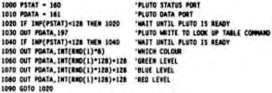

Scorpio News |
October–December 1987 – Volume 1. Issue 4. |
| Page 25 of 55 |
|---|
Having done a remarkably successful bit of cadging, I now have a mini palette board for my Pluto 1. The board is small, and plugs onto the two lots of pins at the edge of the Pluto away from the mother-board. Once on, it does not come off easily, so if you bought one in the Scorpio sale, be sure you don’t want to do any work underneath it before you fit it.
Also supplied were two ROMs to replace the original single one. These contain extra routines, to carry out extra functions of the palette board. There must be a lot of spare space in the second one, presumably, unless the new routines ace a lot bigger than they might reasonably be expected to be.
The catch when cadging equipment is that one is unlikely to get any support from the manufacturer if it refuses to do anything, Thanks again, Io, for making the two boards work when I gave up the attempt; what nice people you mast be. Mind you, they didn’t install the wire link that needs to be put in to decode the second ROM, but I eventually worked that one out from some circuit diagrams of part of the board that I had also cadged.
I made an interesting discovery when I changed the plug on the video lead, to suit the mini palette connector. In fact I made exactly the same stupid mistake that I made the first time I connected the old lead up. If you ever get an all green picture, very bright, and way out of synchronisation, from a Microvitec monitor, you have done the same thing. The picture of the pin-out, next to the socket on the back of the monitor, is not a picture of the pins as you look at them. It is a picture of what you would see if you were inside the monitor, and looking out.
This is so absurd that I can scarcely believe it caught me out twice. Anyway, once I reversed the connections to a mirror image of my first version, the picture became far more pleasant to look at. The height and width of the picture were slightly different from before, but only the height needed to be adjusted which is fortunate, as the width adjuster is not easy to get at.
Now we come to the interesting bit. The monitor is a standard Microvitec one. I had always used it for digital RGB signals, and had always thought that was all it could cope with. Knowledgeable people on Micronet told me to change it over to analogue signals, and this is so easy and useful a thing to do that I am going to pass the information on.
But first, the warning. Switch it off, and leave it for half an hour, before you unplug it. Only then should you take the case off a monitor. They really can kill you, and as I have said before, I need all the readers I can get!
Inside the box, near where the wires from the input lead join the printed circuit board, is a row of ten vertical pins with three links plugged onto them. The pins are in three groups of three, with a spare pin on the right as you look at it from the rear of the monitor. Assuming the pin on the left is pin 1, as you look at the monitor from the rear, then when the links connect pins 2 and 3, 4 and 5, 8 and 9, the monitor is set for TTL levels. If you change the links to conned 1 and 2, 5 and 6, 7 and 8, then you have just converted a monitor to analogue. Put the case back on before going any further.
Having dove all that, I found I had what appeared to be a normal Pluto 1. I still bad to test the new colours, as when powered up, the board defaults to the original saturated colours. Clearly, a quick and dirty test program was required. Choosing a suitable language for such purposes, I wrote a program to change randomly the colours on screen. I then ran an old graphics program to get something to look at, and then ran this:
| Page 25 of 55 |
|---|